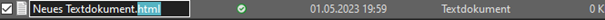
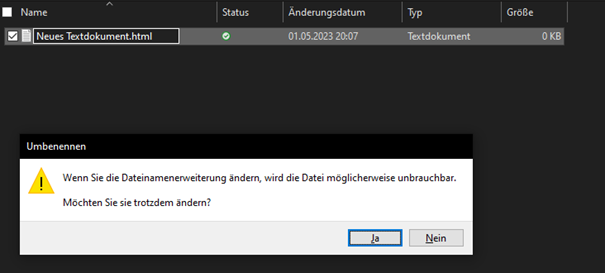
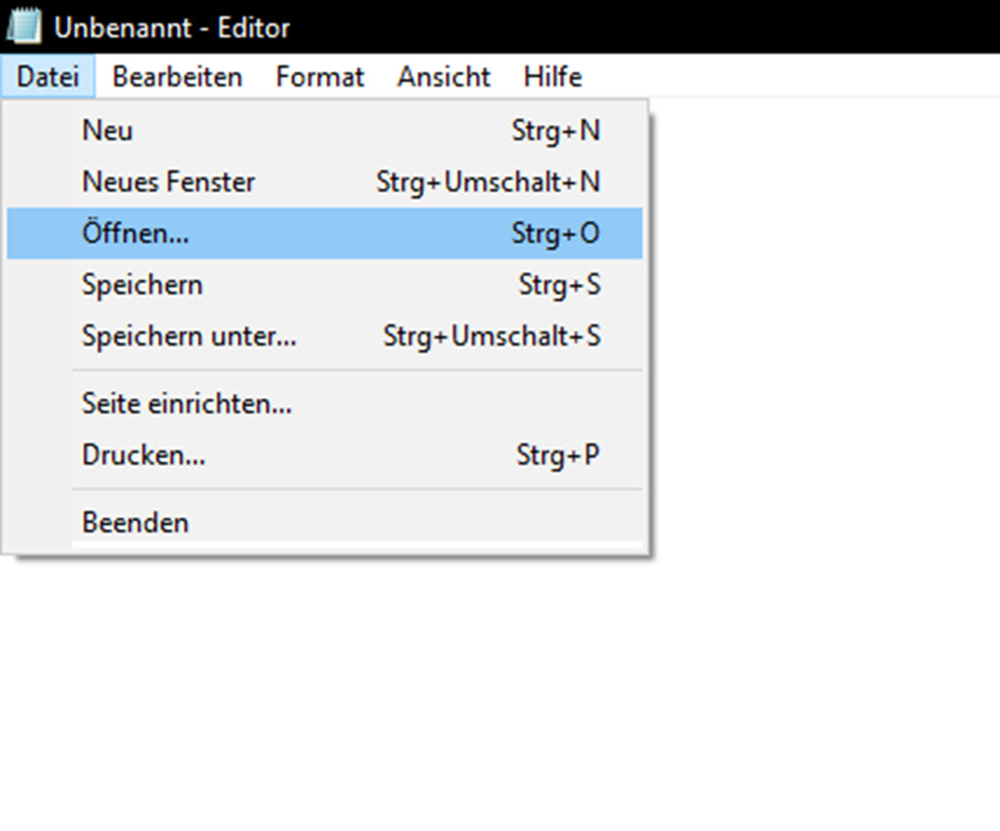
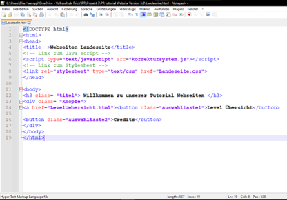

HTML steht für Hypertext Markup Language und ist die grundlegende Sprache für die Webentwicklung. Wenn du diese Sprache beherrschst bist du in der Lage verschiedene Arten von Webseiten zu erstellen und zu gestalten. HTML ist aber keine Programmiersprache denn Programmiersprachen müssen Programme ablaufen. HTML wird genutzt um den Aufbau einer Seite zu beschreiben und zu strukturieren darum zählt es als Auszeichnungssprache. Eine Programmiersprache wirst du aber in diesem Kurs auch noch anschauen wenn es dann um JavaScript geht.
Als erstes lernst du wie du ein HTML Dokument erstellst und verschiedene Programme die das Programmieren erleichtern können.
1. Du erstellst im Explorer in einem Ordner deiner Wahl ein neues Text-Dokument. Um dieses Menü zu öffnen musst du im Ordner rechtsklicken.
2. Jetzt wird ein Menü geöffnet um den Namen des Dokuments zu ändern. Wie du es nennst ist egal wichtig ist nur dass die Endung .html ist.
3. Das Fenster dass sich nun öffnet bestätigst du mit «Ja».
Glückwunsch! Du hast erfolgreich dein erstes HTML Dokument erstellt.
Um dieses Dokument zu öffnen musst du ganz einfach im Editor über den Reiter Datei auf öffnen klicken und das Dokument welches du öffnen willst doppelklicken.
Statt dem Editor gibt es noch ähnliche Tools die aber spezifisch fürs Programmieren entworfen wurden. Diese Webseite haben wir hauptsächlich mit dem Programm Notepad++ erstellt. Der Vorteil bei Notepad++ ist dass es einfach zu nutzen ist und mit einer Vielzahl an Programmiersprachen kompatibel ist. Es hat zudem nützliche Funktionen wie automatische Vervollständigung und eine Syntaxhervorhebung.
von Elia gemacht